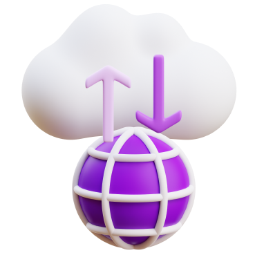

Kontroluj i zarządzaj całym łańcuchem dostaw - od pojedynczego pola, poprzez dystrybucje aż po przetwarzanie surowców.
PRZECZYTAJ WIĘCEJ
- Kontraktowanie dostaw
- Kontrola jakości produktów
- Współpraca z dostawcami
- Zdalne doradztwo
Kontroluj pracę gospodarstwa rolnego oraz zwiększ rentowność produkcji. Wykorzystaj moc sensorów IoT oraz sztucznej inteligencji.
PRZECZYTAJ WIĘCEJ
- Monitorowanie upraw
- Rolnictwo precyzyjne
- Wspieranie decyzji
- Zarządzanie inwentarzem

Otwórz się na nowe modele biznesowe, skorzystaj z cyfrowych kanałów sprzedaży i marketingu. Bądź doradcą, nie tylko sprzedawcą!
PRZECZYTAJ WIĘCEJ
- Dystrybucja produktów i usług
- Kampanie marketingowe
- Zdobądź nowych klientów
- Raporty i analizy rynkowe